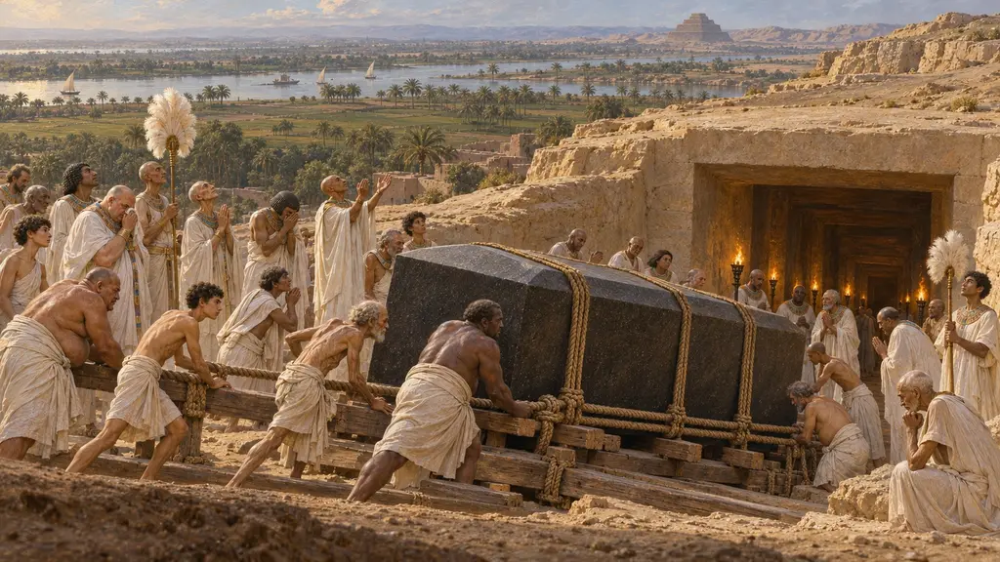
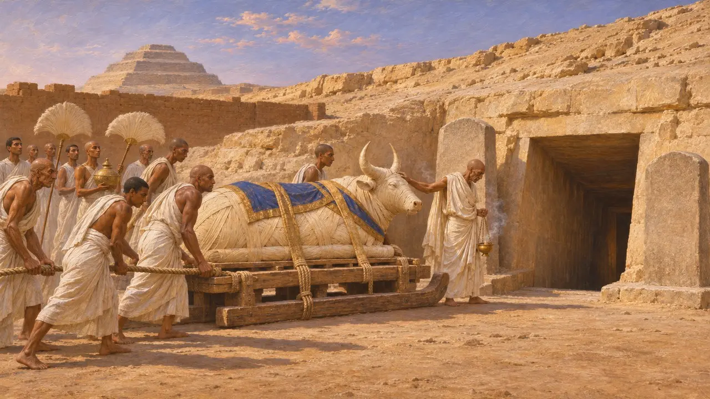
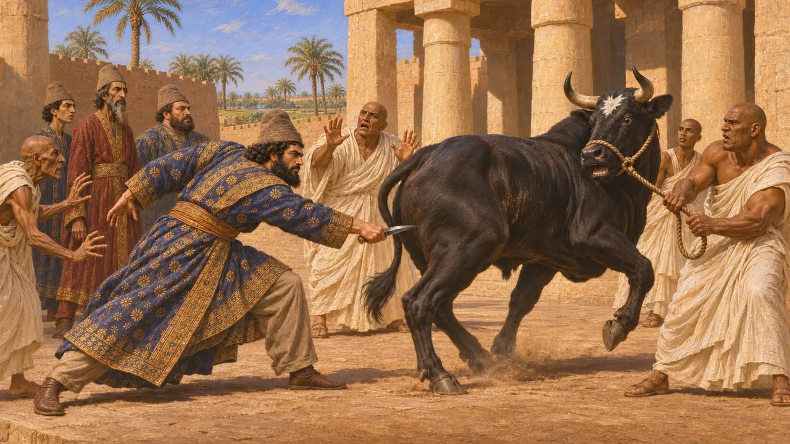
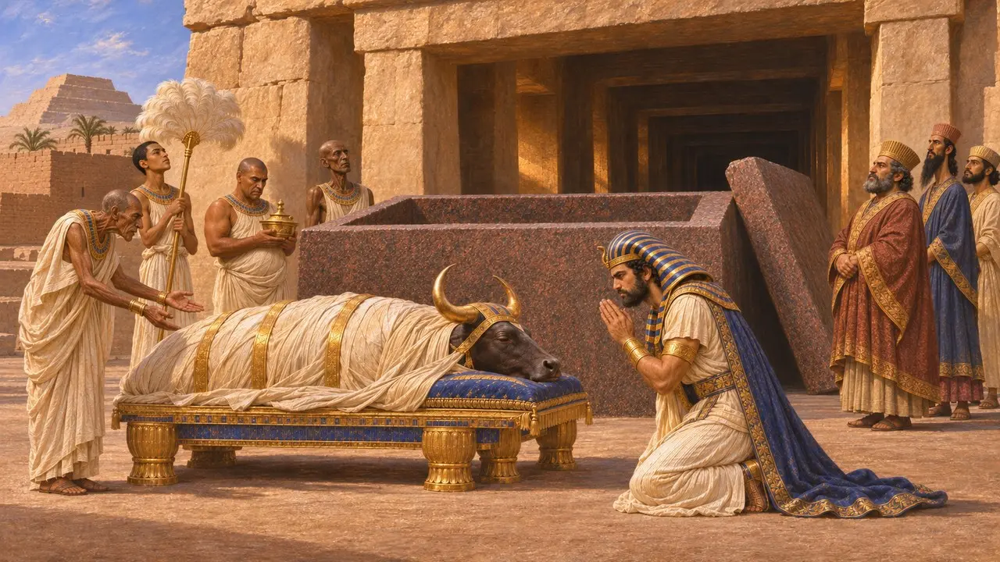
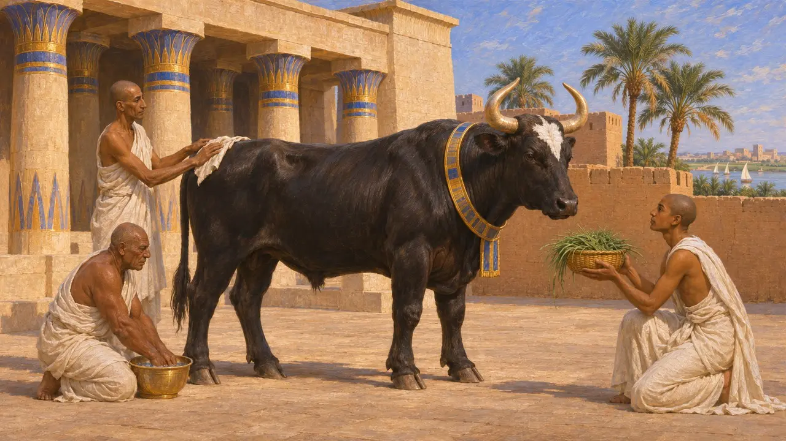
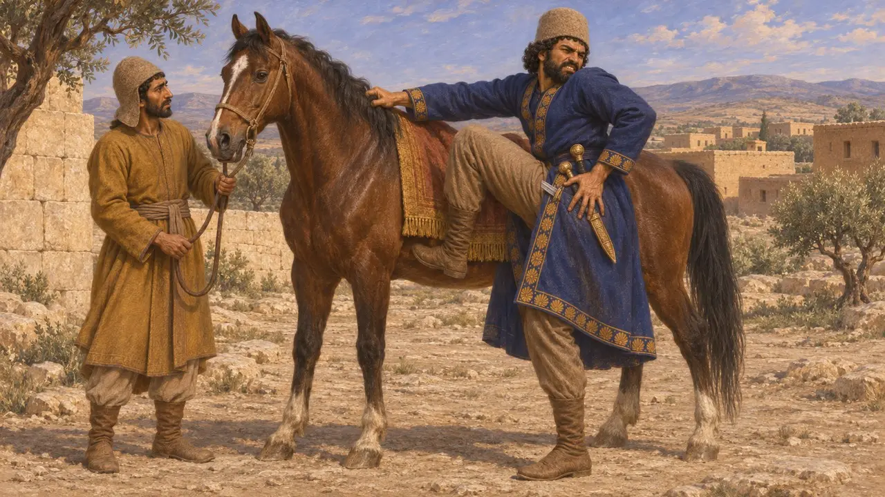

Enciclopedia › Batallas y acontecimientos

La muerte del toro Apis
Muerte y entierro del toro sagrado de Menfis, sexto año de Cambises, 524 a. e. c.
En el juego: Nivel 2: El Portalanza
El Apis era el toro sagrado vivo de Ptah en Menfis, y su muerte y su entierro eran grandes acontecimientos de la religión egipcia. Heródoto dice que Cambises hirió al toro con ira y que los egipcios hacían arrancar su locura de este crimen. En cambio, las inscripciones egipcias del Serapeo de Saqqara muestran un Apis enterrado con todos los honores en nombre del rey en 524 a. e. c. El choque entre ambas versiones ha marcado el modo en que los historiadores juzgan el dominio persa en Egipto.
En el juego: La Crónica sitúa el relato de Heródoto sobre la puñalada junto al epitafio de Saqqara y trata ambos como la muerte de un solo toro en 524 a. e. c. En Heródoto, el toro apuñalado era un Apis recién hallado, y se debate a qué toro se refería.

El toro sagrado de Menfis
En los documentosLos egipcios sostenían que un solo toro a la vez, elegido por unas marcas especiales, era la imagen viva del dios Ptah. Cuando moría, se lo momificaba y se lo enterraba en las galerías subterráneas del Serapeo de Saqqara, y se buscaba a su sucesor. Las estelas erigidas en cada entierro registran el nacimiento, la entronización y la muerte del toro según los años de reinado, lo que las convierte en una valiosa herramienta de datación para la época.
A. Mariette, excavations of the Serapeum, 1850s; G. Posener, La première domination perse en Égypte, 1936

La historia de Heródoto sobre la puñalada
Relato antiguoHeródoto cuenta que, cuando Cambises volvió a Menfis de su fallida marcha hacia el sur, había aparecido un nuevo Apis y la ciudad estaba de fiesta. Creyendo que los egipcios se burlaban de su derrota, el rey hizo traer al toro y le asestó una puñalada en el vientre, pero le hirió el muslo. Heródoto dice que el Apis se fue consumiendo y que los sacerdotes lo enterraron en secreto. Añade que los egipcios atribuyeron la locura de Cambises a este crimen, aunque él pensaba que el rey ya estaba trastornado antes.
Herodotus 3.27-30

El entierro en el año 6
En los documentosUna estela del Serapeo registra que un Apis murió y fue enterrado en el sexto año de Cambises, en 524 a. e. c. Muestra al rey con atuendo real egipcio, arrodillado ante el toro. Un gran sarcófago de granito en las galerías lleva además una inscripción que nombra a Cambises como quien lo hizo para el dios. Ambos indicios apuntan a un entierro celebrado con honores reales, y no en secreto.
Serapeum stela of Cambyses year 6 (Louvre); G. Posener, La première domination perse en Égypte, 1936

Qué toro, y por qué surgió el relato
En disputaUna estela del cuarto año de Darío registra la muerte de un Apis nacido en el quinto año de Cambises, de modo que el nuevo toro que describe Heródoto parece haber sobrevivido a Cambises. Por ello, la mayoría de los historiadores consideran la puñalada una tradición hostil. Algunos piensan que procede de sacerdotes irritados por los recortes en los ingresos de los templos, que un texto egipcio muy posterior, la Crónica demótica, atribuye a Cambises. Otros sostienen que la cronología deja margen a Heródoto, y la cuestión no está del todo resuelta.
P. Briant, From Cyrus to Alexander, 2002; L. Depuydt, Murder in Memphis, Journal of Near Eastern Studies 54, 1995

Herida por herida
Leyenda posteriorHeródoto cierra el relato con un eco moral. Cuando Cambises saltó después sobre su caballo en Siria, la punta de su espada le atravesó el muslo justo en el lugar donde había herido al Apis, y murió a causa de la herida. La limpia correspondencia entre crimen y castigo muestra que se trata de una historia moldeada para enseñar, no de un registro de los hechos.
Herodotus 3.64
Fuentes
- Herodotus 3.27-30
- Serapeum stela of Cambyses year 6 (Louvre)
- G. Posener, La première domination perse en Égypte, 1936
- P. Briant, From Cyrus to Alexander, 2002
- L. Depuydt, Murder in Memphis, Journal of Near Eastern Studies 54, 1995
- Herodotus 3.64